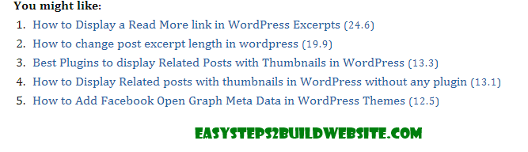
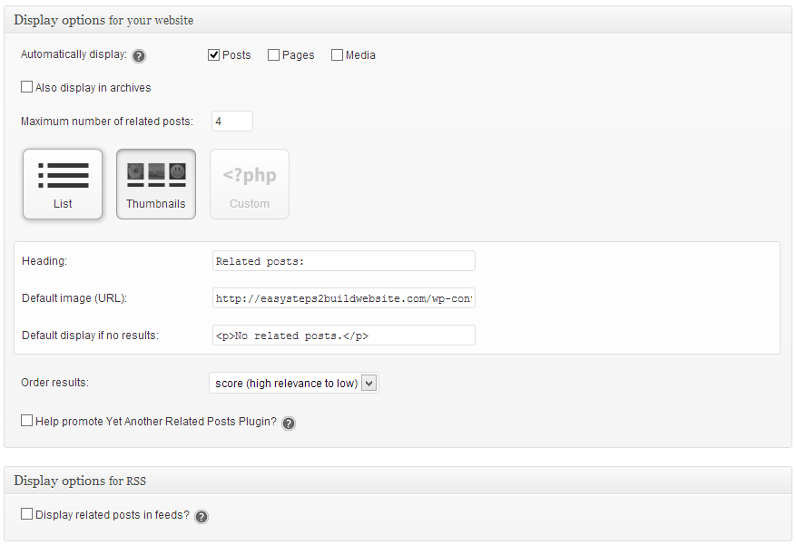

YARPP ( Yet another related Posts plugin) is one of the best WordPress plugin for displaying related posts on your blog. We have already mentioned it in our list of best related posts plugin. There are number of WordPress plugins which does this task pretty well but here we are gonna see how it is different than others and why you should choose this plugin instead of other plugins.
Why you should display related posts on your blog?
There are several advantages of showing related posts on your blog, some of them are –
- It helps to reduce bounce rate – engages users by displaying most related content.
- Increases page-views/visit
- Improves On page SEO
- Increase avg time/ user on your blog by providing them what they are looking for.
How it looks on your website?

The above image is from this blog itself, I prefer to display related posts in list style, however if you want to display related posts with thumbnails then you can select the same from settings page.
It also adds a YARPP Widget in your widget section so that you can also embed them in your sidebar if you want. This can be useful when you already have a plugin which shows thumbnails at the end of the posts.
Download page: Download the plugin from the below link, install and activate it on your blog.
http://wordpress.org/plugins/yet-another-related-posts-plugin/
Configuration page for YARPP
Setting up yet another related posts plugin is a cake walk. As you can see that it does everything by itself, you need to just select few options, which you can see in the below settings screen.

What all you can customize using this plugin:
- You can choose how many related posts you want to display on your blog.
- Automatic display on posts, pages.
- Three styles of display – list style, posts with thumbnails and custom code.
- Can customize the order of display.
- You can provide default image url, it will be used as a thumbnail for the posts which doesn’t have any featured images (or thumbnails).
- Alternatively, it gives you the ability to display them in the feeds, cool huh!!
If you want to change the position of display then manually add the below code to your theme’s template at the place where you wanna display related posts by YARPP plugin.
<?php related_posts(); ?>
Why it is the best among others?
There are number of plugin to do the same thing, some of them are pretty attractive. However this plugin fetches the most relevant related posts compared to other. The algorithm being used by plugin considers post title, tags, category and post’s content while gathering the most relevant posts to display for a particular post.
Note: This plugin uses related_posts() function so if you have already installed a plugin which is using this function then installing YARPP can result in an error. Also, if you have setup a code manually for displaying related posts and wanna install YARPP too then you must need to change the function name in the code.
Let us know if you believe that there is any other plugin which is better than yet another related posts plugin. Also, do tell us your thoughts via comment if I missed to mention any YARPP’s feature above.
Leave a Reply